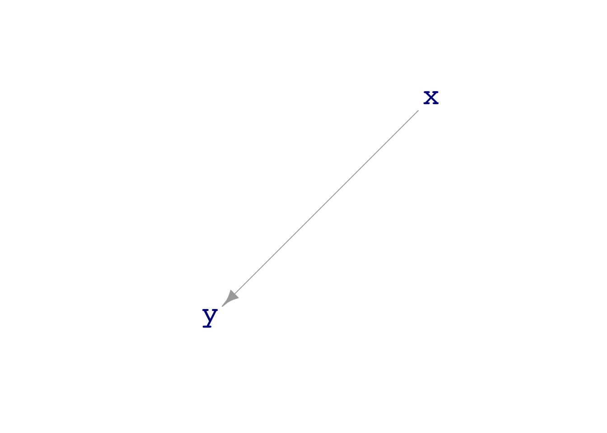

This list is assembled from the individual-lesson learning check files in the LC/ directory. Make any changes in that directory.
Lesson 19
Setup
The math300 package will be needed for lessons 20 through 39.
library(math300)
Loading required package: mosaic
Registered S3 method overwritten by 'mosaic':
method from
fortify.SpatialPolygonsDataFrame ggplot2
The 'mosaic' package masks several functions from core packages in order to add
additional features. The original behavior of these functions should not be affected by this.
Attaching package: 'mosaic'
The following objects are masked from 'package:dplyr':
count, do, tally
The following object is masked from 'package:Matrix':
mean
The following object is masked from 'package:ggplot2':
stat
The following objects are masked from 'package:stats':
binom.test, cor, cor.test, cov, fivenum, IQR, median, prop.test,
quantile, sd, t.test, var
The following objects are masked from 'package:base':
max, mean, min, prod, range, sample, sum
19.1 (Objective 2)
What are the two settings for decision making that we cover in this course?
Give an example of each.
Solution
Prediction and (2) Relationship
What will be the sales price of this house? “This house” is a shorthand way of saying “a house with these attributes.” The sales price will be the output of a prediction function that takes the various attributes as input and produces a sales price as output.
If I look for a house with an additional bathroom, how much will that change the sales price? This asks for the relationship between number of bathrooms and sales price.
19.2 (Objective 2)
For each of these research questions, say whether it is a prediction setting or a relationship setting.
What’s the risk of falling ill?
How will the risk of falling ill change if we eat more broccholi?
Is there any reason to believe, based on the evidence at hand, that we should look more deeply into the possible benefits of broccholi?
Solution
Prediction
Relationship
Relationship
19.3
Fit a model to some data. Write down the function implied by the coefficients.
Evaluate the function for:
a=7, b=9
and so on.
Solution
19.4
About the summarization of models. Pipe the model fit into any of four functions:
%>% coefficients()
%>% broom::tidy()
%>% rsquared()
%>% confint()
REDO confint() so that the columns are named lower, middle, upper
Solution
Lesson 20
20.1
?@sec-size-of-variable describes two very closely related summary quantities used to measures of the “size” of a variable: i. the variance and ii. the “standard deviation” (which is the square root of the variance.
Using software, what is the variance of the XXX variable in the YYY data frame? Make sure to include the units.
What is the “standard deviation” of the XXX variable? Calculate this in two different ways: i. “by-hand” taking of the square root of the variance; ii. using the sd() software directly.
[Repeat for a number of variables from different data frames.]
Solution
20.2
Solution
Lesson 21
21.1
The following command will generate a data frame with 1000 rows from dag00 and calculate the variance of the x and y variables:
[[1]]
x ~ eps(2) + 5
[[2]]
y ~ eps(1) - 7
attr(,"class")
[1] "list" "dagsystem"
In the tilde expressions, eps(2) means to generate noise of magnitude 2.0.
Is the argument to eps() specified in terms of the variance or the standard deviation?
The tilde expression for x specifies that the constant 5 is to be added to eps(2). Similarly, the constant -7 is added to y. How do these constants relate to the calculated magnitudes of x and y?
Solution
The standard deviation. For instance, x has noise of magnitude 2. The variance of x is 4, the square of 2.
The standard deviation (and therefore the variance) ignore such added constants.
21.2
?@sec-signal-and-noise introduces the idea that variables consist of components. A simple breakdown is into two components: i. the part of the variable that is determined by other variables in the system (“signal”) and ii. the random part of the variable (“noise”). The section uses dag01 as an illustration of how a variable can be partly determined and partly random noise.
Write and execute a command that will generate 500 rows of simulated data from dag01 and will calculate the standard deviation of x and of y.
What’s the magnitude of x in the simulated data? What’s the magnitude of y?
Does this change if you use data with 1000 or 20000 rows?
The standard deviation of x is about 1, the standard deviation of y is about 1.8.
No, the values are roughly the same regardless of the size of the sample.
21.3
[DRAW several DAG-like graphs, one of which should be undirected in all edges, one should be undirected on one or two edges (but not all), and one should be cyclic and another acyclic.]
Referring to the graphs in the figure, say which ones are DAGs. If a graph is not a DAG, say whether that’s because it’s not directed or because it’s not cyclic.
Solution
21.4
Generate simulated data from dag01 with 1000 rows. Fit the regression model y ~ x to the data and examine the coefficients.
How do the coefficients relate to the tilde expressions that define dag01?
Instead of using the regression model y ~ x, where y is the response variable, try the regression model x ~ y. Do the coefficients from x ~ y correspond in any simple way to the tilde expressions that define dag01?
Solution
sample(dag01, size=1000) %>%lm(y ~ x, data = .)
Call:
lm(formula = y ~ x, data = .)
Coefficients:
(Intercept) x
4.004 1.502
The intercept corresponds to the additive constant (4) in the y tilde expression. The x coefficient corresponds to the multiplier on x in the tilde expression.
The formula for x isn’t reflected by the coefficients.
Using x as the response variable:
sample(dag01, size=10000) %>%lm(x ~ y, data = .)
Call:
lm(formula = x ~ y, data = .)
Coefficients:
(Intercept) y
-1.8508 0.4638
These coefficients do not appear in the dag01 tilde expressions.
Lesson 22
22.1 (Obj 20.3)
Consider these three data frames:
One <-sample(dag01, size=25)Two <-do(10) * {lm(y ~ x, data =sample(dag01, size=25)) %>%coefficients() }Three <- Two %>%summarize(mx =mean(x), sx =sd(x))
Both One and Two have columns called x, but they stand for different things. Explain what the unit of observation is and what the values in x represent..
Three does not have a column named x, but it is a summary of the x column from Two. What kind of summary.
Solution
In One, the x column contains the simulated of the x variable from dag01. The unit of observation is a single case, for instance a person for whom observations were made of x and y. The simulation involves generating 25 rows of data: one row for each of 25 people.
In Two, the x column is the regression coefficient on x from the simulation. Each row of Two corresponds to one trial in which regression is being performed on a sample of size 25 of simulated data from dag01.
Three is a summary of the 10 trials in Two. The columns, named mx and sx, tell about the distribution of x across all the trials.
Lesson 23
23.1
Vocabulary: Sampling distribution, standard error, sampling variability, sample size
Solution
Lesson 24
24.1
Solution
Lesson 25
25.1
Solution
Lesson 26
Ideas
Construct prediction interval when evaluating a model function.
Plot a prediction band.
Check the consistency of the prediction band with the DAG mechanism for large \(n\).
Is the width right?
Is the slope right?
For small \(n\) (say, \(n=5\)), how is the prediction band different than for large \(n\)?
26.1
Solution
Lesson 27
This is a QR day.
27.1
Solution
Lesson 28
28.1
Consider dag01, which shows a simple causal relationship between two variable.
dag_draw(dag01)

So far as the size of prediction error is concerned, does it matter whether x is used to predict y or vice versa? Show the models and the results you use to come to your conclusion. ::: {.callout-note} ## Solution
:::
Lesson 29
LC 29.1
In dag04, build models to predict c from the other variables. Does one of those variables “block” the others?
Explain how you know this from your models. Try to give an answer in everyday language as well.
Repeat but use a very small sample size, say \(n=5\). Has your conclusion about blocking changed? Explain why.
Solution
compare_rms_error(dag04, c~1, c ~ d, c~ b + d, c ~ a + b + d, n=50, in_sample =TRUE)
[1] 0.8470443 0.6628943 0.6408581 0.5688379
d seems to block effect of a and b on c.
compare_rms_error(dag04, c~1, c ~ d, c~ b + d, c ~ a + b + d, n=5, in_sample =TRUE)
[1] 1.4806412 0.5652314 0.5373352 0.4960967
LC 29.2
We are using in-sample testing because that is often the case in the model-building stage. However, in the model-using stage, things are different. You will be making predictions of new cases, that is, out-of-sample.
For out-of-sample, when working with new data, it’s not just a matter of being tricked into thinking covariates are useful when they’re not. Using irrelevant covariates can be genuinely harmful to the predictions.
Compare these in-sample and out-of-sample results.
set.seed(101)compare_rms_error(dag07, d ~1, d ~ c, d~ b + c, d ~ a + b + c, n=4, in_sample =TRUE)
set.seed(101)compare_rms_error(dag07, d ~1, d ~ c, d~ b + c, d ~ a + b + c, n=4, in_sample =FALSE)
[1] 0.965495 1.434434 1.641881 1.591050
What do you see in the results that tells you that incorporating irrelevant covariates hurts the out-of-sample predictions?
Lesson 30
30.1
Dags with longer confounding pathways. Is there mixing when leaving out an element in the pathway. Mix up the directions of the arrows and show that the mixing occurs when the covariate is included in the model.
Regression to the mean example.
Collider?
Solution
Lesson 31
31.1
Solution
Lesson 32
32.1
Solution
Lesson 33
33.1
Convert probability to odds and log odds, and vice versa.
Solution
Lesson 34
34.1
Solution
Lesson 35
35.1
Given some classifier summaries, calculate the false-positive and false-negative rates as well as the sensitivity and specificity